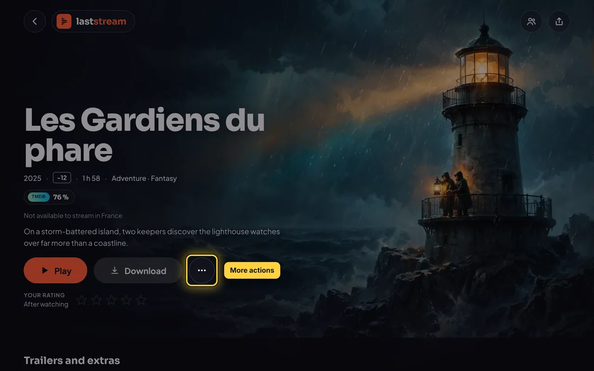
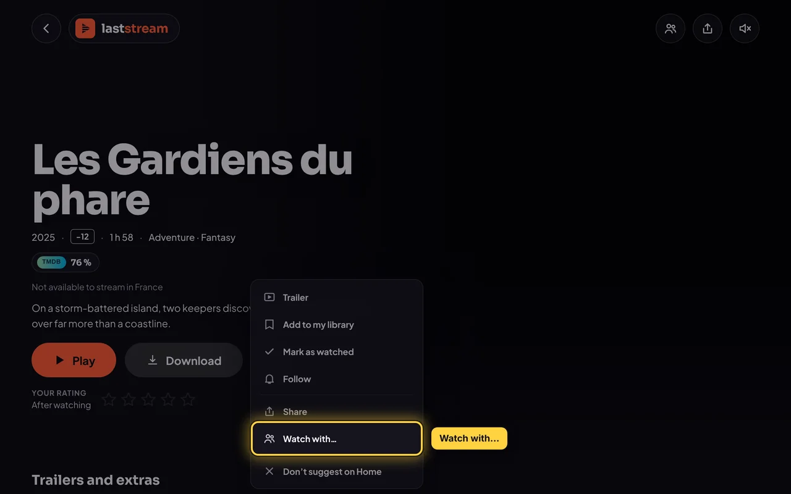
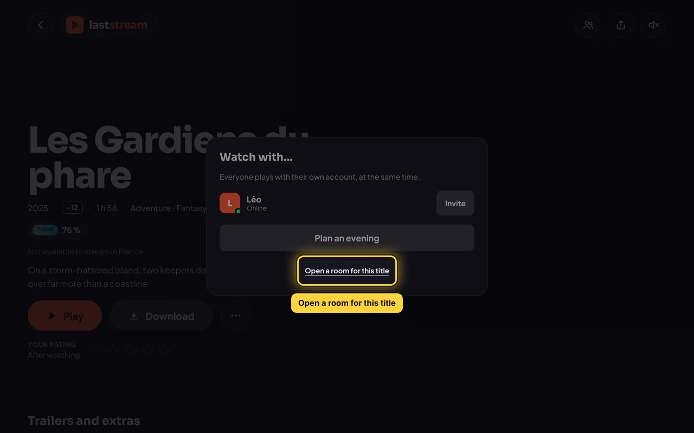
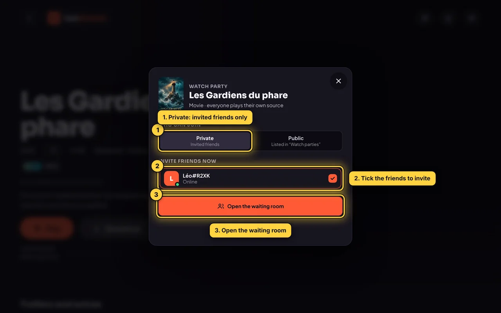
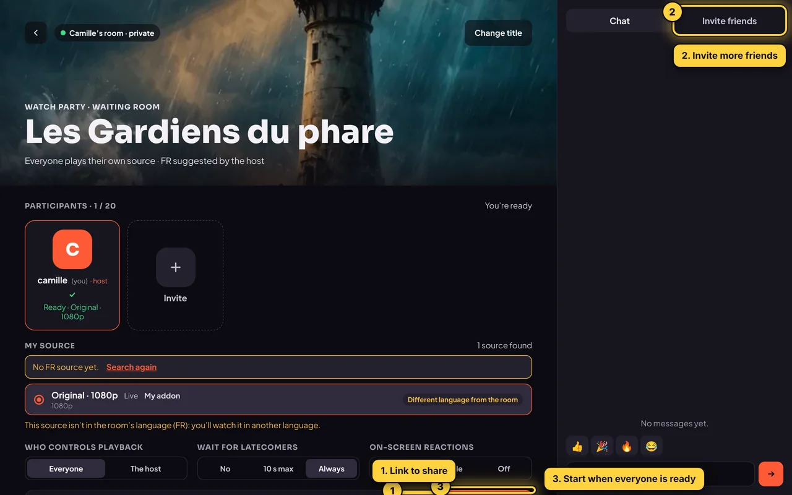

Before you start
- A signed-in account, on an adult profile.
- At least one friend (see Add friends), or the room link to share.
- A source that finds the title (see Add a Stremio source).
Steps
On each screenshot, the yellow frame shows where to tap or click; the numbers give the order. The app is in French: the screenshots show its English translation.
-
Open the film’s page and tap the “…” button next to Play.

-
Pick “Watch with…”.

-
Your online friends are listed, with “Invite”. To bring several people together, tap “Open a room for this title”.

-
Keep “Private” (1) for your guests only, or pick “Public” to list the room under “Watch parties”.
Tick the friends to invite (2), then “Open the waiting room” (3).

-
In the waiting room, everyone sees their source getting ready. Share the link (1) with someone who has no account, or invite more friends (2).
When everyone is ready, start playback (3): playback stays in sync.
